바이브코딩 맛보기
바이브코딩으로 만드는 장면을 먼저 보고, 바이브코딩이 무엇인지, 어떤 도구와 요금제가 있는지, 웹 페이지는 무엇으로 이루어지는지 짚어보겠습니다!
말로 부탁하면 몇 분 안에 화면이 나옵니다
한 문단 부탁하고 사진 한 장을 보여 주면, AI가 코드를 써서 바로 해볼 수 있는 게임 화면을 만듭니다.
영상은 Gemini의 캔버스 화면입니다. 코드는 한 줄도 직접 쓰지 않았고, 부탁 한 문단과 디자인을 참고할 사진 한 장만 넣었습니다. 몇 분 뒤 오른쪽 창에 책이 떨어지는 게임이 뜨고, 그 자리에서 바로 해볼 수 있습니다.
오늘 실습도 같은 화면에서 합니다. 게임 대신 수업에서 쓸 작은 도구를 만들고, 마지막에는 그 도구를 학생들이 링크로 열 수 있게 올립니다.
코드를 몰라도, 말로 시켜서 만듭니다
만들고 싶은 것을 말로 설명하면 AI가 코드를 쓰고, 사람은 결과를 보면서 다시 말로 고칩니다.
여러 바퀴면
수업 도구
바이브코딩이라는 말은 2025년 초 AI 연구자 안드레이 카파시가 처음 썼습니다. 코드를 한 줄씩 짜는 대신 원하는 느낌을 말로 전하고, 나온 결과를 보면서 다시 말로 고치는 방식입니다.
코드를 몰라도 시작할 수 있는 까닭은 사람이 맡는 일이 코드가 아니기 때문입니다. 수업 장면을 설명하고, 화면에 나온 내용이 교과서와 맞는지 보고, 학생이 헷갈릴 곳을 짚어 고쳐 달라고 하는 일은 그 교과를 가르치는 선생님이 가장 잘합니다.
바이브코딩으로 가능한 것은 무엇일까요?
토큰(AI 사용량), 시간, 아이디어만 있다면 선생님이 상상하시는 무엇이든 가능하다고 감히 말씀드릴 수 있습니다.
토큰, 그러니까 AI 사용량과 시간, 그리고 아이디어만 있다면 선생님이 상상하시는 무엇이든 가능하다고 감히 말씀드릴 수 있습니다. 두 달 전까지 안 되던 것이 새로운 모델이 나오면 가능해지고, 이런 변화의 속도가 매우 빠릅니다.
같은 AI라도 일하는 자리가 다릅니다
채팅창에서 코드를 받아 오느냐, AI가 내 컴퓨터 폴더에서 직접 일하느냐가 가장 큰 차이입니다.
| 갈래 | 대표 도구 | AI가 하는 일 | 이럴 때 |
|---|---|---|---|
| 웹 채팅 | Gemini · ChatGPT · Claude | 코드를 채팅창에 써 줍니다. 파일로 저장하는 일은 사람이 합니다. | 처음 해볼 때, 파일 하나짜리 도구 오늘 |
| 데스크톱 앱 | ChatGPT 앱의 Codex · Claude 앱의 Code 탭 | 폴더를 열어 두면 파일을 직접 만들고, 고치고, 열어봅니다. | 여러 번 고쳐 가며 키울 때 |
| 터미널 | Claude Code · Codex CLI · Gemini CLI | 앱과 같은 일을 검은 창에 글로 시킵니다. | 익숙해진 뒤 여러 작업을 한꺼번에 맡길 때 |
| 코드 편집기 | VS Code · Cursor · Antigravity | 코드를 눈으로 보면서 AI와 같이 고칩니다. | 코드를 직접 읽어보고 싶을 때 |
| 브라우저 에이전트 | Claude in Chrome · ChatGPT의 Chrome 확장 | AI가 내 크롬을 직접 눌러 가며 확인하고 작업합니다. | 만든 앱을 AI가 눌러 보며 검사할 때 |
웹 채팅에서는 코드가 채팅창 안에 있어서, 파일로 옮겨 담는 일을 사람이 합니다. 데스크톱 앱에서는 AI가 폴더 안에서 파일을 만들고, 고치고, 열어봅니다.
대화가 끝나도 폴더에 파일이 있으니 "이 폴더의 index.html을 이어서 고쳐 줘" 한 줄이면 이어집니다.
차시 페이지 여러 장, 그림 파일, 데이터 파일을 한꺼번에 만들고 서로 잇습니다.
만든 페이지를 직접 실행해 보고, 오류가 나면 말하기 전에 고치기도 합니다.
폴더의 CLAUDE.md나 AGENTS.md에 적어 둔 규칙을 대화를 시작할 때마다 저절로 읽습니다.
오늘은 웹 채팅인 Gemini로 합니다. 웹 채팅은 무료 계정으로도 되고, 데스크톱 앱은 유료 요금제에서 넉넉하게 씁니다. ChatGPT 무료 계정도 데스크톱 앱에서 Codex를 조금 쓸 수 있지만 가벼운 모델만 됩니다.
웹 채팅은 코드가 채팅창 안에 있어서, 학생에게 나누려면 코드를 파일로 옮겨 올려야 합니다. 3장면에서 그 일을 GitHub로 해봅니다. 위 네 칸은 데스크톱 앱처럼 폴더에서 일하는 도구로 옮겨 갔을 때 달라지는 점입니다.
모델은 AI의 두뇌입니다
같은 앱 안에서도 모델을 고를 수 있습니다. 똑똑한 모델일수록 사용량을 빨리 씁니다.
| 회사 | 가장 똑똑한 모델 | 주로 쓰는 모델 | 가볍고 빠른 모델 |
|---|---|---|---|
| Google (Gemini) | Gemini 4 Argon | Pro · Flash(3.8 Flash) | Flash-Lite |
| OpenAI (ChatGPT) | GPT-6 Astra | GPT-6 Sol | GPT-6 Luna |
| Anthropic (Claude) | Fable 5.2 | Opus 5.5 · Sonnet 5.5 | Haiku 5.5 |
2026년 11월 10일 각 회사의 공식 안내 기준입니다. 무료 계정에서는 Gemini가 Auto와 Flash-Lite, ChatGPT가 GPT-6 Luna를 씁니다. 모델 이름은 몇 주 단위로 바뀝니다.
처음 틀을 잡을 때는 똑똑한 모델이 실수를 덜 합니다. 글자 몇 개를 바꾸거나 색을 고치는 일은 가벼운 모델로도 충분해서, 그런 일에 똑똑한 모델을 쓰면 한도만 빨리 줄어듭니다.
모델은 입력칸 근처의 모델 이름을 눌러 고릅니다. 2장면에서 Gemini의 모델을 고를 때도 이 메뉴를 씁니다.
무료와 유료, 무엇이 다른가요
오늘 실습은 무료 계정으로 끝까지 됩니다. 유료 요금제로 올라가면 쓸 수 있는 양이 늘고, AI가 내 컴퓨터 폴더에서 직접 일하는 도구가 열립니다.
| 무료 | 월 3만 원 안팎 | 월 15만 원 이상 | |
|---|---|---|---|
| Gemini | 채팅, 캔버스 미리보기 | Google AI Pro(연 29만 원) | Google AI Ultra 월 119,000원 · 300,000원 |
| ChatGPT | 채팅, 데스크톱 앱에서 Codex 조금 | Plus 월 20달러 · Codex(앱·웹·터미널) | Pro 월 100 · 200 · 500달러 |
| Claude | 채팅, 아티팩트 미리보기 | Pro 월 20달러 · Code 탭, Claude in Chrome | Max 월 100달러 · Ultra 월 200달러 |
2026년 11월 10일 각 회사의 공식 요금 안내 기준입니다. 달러 값에는 세금이 빠져 있어 한국에서 결제하면 부가세가 더 붙습니다. 그 사이에 ChatGPT Go(월 8달러), Google AI Plus(월 7,500원) 같은 가벼운 요금제도 있습니다. 요금제 이름과 값은 자주 바뀌니, 결제 전에 결제 화면에서 한 번 더 봅니다.
긴 코드가 중간에 끊기고, 하루에 쓸 수 있는 양이 금방 찹니다. 높은 수준의 모델은 잠겨 있거나 몇 번만 쓸 수 있습니다.
쓸 수 있는 양이 늘고, Claude의 Code 탭이나 ChatGPT의 Codex처럼 폴더에서 일하는 AI를 넉넉히 씁니다. 한도는 5시간마다 다시 채워지는 몫과 한 주 몫이 함께 있습니다.
5단계 전체아래 단추로 한 단계씩 넘기면 단계마다 배우는 것과 다음 단계로 넘어가는 때가 나옵니다. 「차례로 보기」를 누르면 저절로 넘어갑니다.
맛보기웹 채팅에 말로 부탁해 한 파일 도구를 만들고, 채팅 화면의 미리보기로 바로 눌러봅니다. Gemini 캔버스, Claude 아티팩트, ChatGPT 미리보기가 그 자리입니다. 오늘 2장면이 이 단계입니다.
배포학생에게 보여 주고 싶어지면 넘어가는 단계입니다. 만든 파일에 주소를 붙여 링크 하나로 건넵니다. GitHub Pages, Netlify, Vercel에 올리고, 휴대폰이나 시크릿 창으로 학생이 보는 화면을 확인합니다. 오늘 3장면이 이 단계입니다.
폴더에서 일하는 AI고칠 때마다 코드 전체를 다시 받아 붙여넣고 다시 올리는 게 번거로워지면 넘어가는 단계입니다. AI가 내 컴퓨터 폴더를 직접 열어 파일을 고치고, 여러 파일로 키워도 이어서 고칩니다. ChatGPT 데스크톱 앱의 Codex는 무료 계정도 조금 써볼 수 있고, 넉넉히 쓰려면 그때 월 3만 원 안팎의 요금제를 고민합니다.
학생 데이터학생 답을 모으고 싶어지면 넘어가는 단계입니다. 답을 서버에 모으고, 누가 읽고 쓸 수 있는지 규칙을 세우고, 로그인한 교사만 보는 화면을 만듭니다. Supabase는 무료로 시작할 수 있습니다.
AI 붙이기교사 도구에 AI를 붙이고 싶어지면 넘어가는 단계입니다. API 키를 숨기고, 결제 한도를 걸고, 약관과 나이 조건을 확인합니다. API는 선불로 쓴 만큼 냅니다.
배포까지 하고 나면, 웹 채팅에서는 한 번 고칠 때마다 이 다섯 걸음을 다시 밟습니다. 열 번 고치면 쉰 걸음입니다.
폴더에서 일하는 AI는 파일을 직접 고쳐서, 사람은 부탁하고 확인만 합니다.
무료 계정은 웹 채팅에서 파일 하나짜리 도구를 만들고 미리 보는 데까지는 넉넉합니다. 다만 코드가 길어지면 답이 중간에 끊기거나, 그날 쓸 수 있는 양이 다 찼다는 안내가 나옵니다. 그럴 때는 기능을 하나 줄이거나 몇 시간 뒤에 이어 갑니다.
무료와 유료의 갈림길은 대개 폴더에서 일하는 AI입니다. 배포까지 하고 나면 웹 채팅에서는 한 번 고칠 때마다 코드 전체를 다시 받아 붙여넣고 다시 올려야 합니다. 폴더에서 일하는 AI는 파일을 직접 고쳐서, 사람은 부탁하고 확인만 합니다. 고칠 때마다 붙여넣고 다시 올리는 일이 번거로워지면 그때 유료 요금제를 고민합니다.
HTML, 서버, API를 처음부터 차례로 배우지 않아도 됩니다. 1단계와 2단계만으로도 링크 하나로 학생에게 건네는 수업 도구를 만들 수 있습니다. 3~5단계는 만든 도구를 수업에서 쓰다가 불편한 점이 생겼을 때 넘어가고, 어떤 때 넘어가는지는 4장면 마무리에 적어 두었습니다.
토큰은 AI가 읽고 쓰는 조각입니다
요금제 한도는 메시지 개수가 아니라, AI가 읽고 쓴 토큰의 양만큼 줄어듭니다.
나누는 방식은 모델마다 조금씩 다릅니다. 부탁문보다 AI가 읽고 쓰는 코드가 훨씬 길어서, 한도는 대부분 코드에서 줄어듭니다.
300줄짜리 앱을 만들고 두 번 고칠 때, AI가 새로 쓰는 양앱도 고치기 전에 파일을 읽느라 토큰을 쓰지만, 새로 쓰는 양은 바뀐 줄뿐입니다. 웹 채팅에서도 "바뀐 부분만 보여 줘"라고 하면 덜 쓰지만, 그 부분을 사람이 찾아서 바꿔 넣어야 합니다.
AI는 글을 토큰이라는 작은 조각으로 나눠 읽고 씁니다. 부탁문 몇 줄보다 AI가 읽어야 하는 코드가 훨씬 깁니다. 그래서 "파일 전체를 다시 써 줘"처럼 긴 코드를 통째로 다시 받는 부탁이 가장 많이 씁니다. 데스크톱 앱은 고칠 부분만 바꾸니 덜 쓰고, 웹 채팅은 고칠 때마다 코드 전체를 다시 받으니 더 씁니다.
대화가 길어지면 AI가 앞부분을 스스로 요약해서 이어 갑니다. 요약하면서 자잘한 약속이 빠질 수 있어서, 꼭 지킬 규칙은 처음 프롬프트에 넣어 두는 편이 안전합니다. 2장면 템플릿의 [지킬 것]이 그 자리입니다.
HTML은 뼈대, CSS는 피부와 옷, JavaScript는 근육과 신경
아래 단추를 차례로 눌러 보세요. 같은 기체 입자 상자에 한 겹씩 더해집니다.
기체 입자 상자
입자의 크기는 온도가 바뀌어도 그대로입니다. 달라지는 것은 움직이는 빠르기입니다.
HTML은 제목, 슬라이더, 단추, 그림 자리가 어디에 있는지 적는 뼈대입니다. CSS는 색, 글꼴, 간격, 모서리 같은 겉모습입니다. JavaScript는 슬라이더를 움직이면 온도에 맞춰 입자의 빠르기를 계산하고 다시 그리는 근육과 신경입니다. 이 상자는 입자의 평균 빠르기가 절대온도의 제곱근에 비례하도록 계산해서 그립니다.
오늘 만드는 도구는 이 세 가지를 index.html 한 파일에 모두 담습니다. 그리고 Java와 JavaScript는 이름만 닮은 서로 다른 언어입니다. 웹 페이지를 움직이는 것은 JavaScript입니다.
교실 도구 만들기
프롬프트 템플릿을 채워 Gemini에서 교실 도구 하나를 만들고, 점검하고, 한 가지씩 고쳐보겠습니다!
평소 교실 수업에서 있으면 좋을 것 같다고 생각하신 프로그램이 있으신가요?
거창한 앱보다, 매 시간 손이 가던 작은 일 하나가 첫 도구로 알맞습니다.
→ 번호 뽑기
→ 모둠 활동 타이머
→ 퀴즈, 모둠 골든벨
→ 낱말 카드 뒤집기
처음 만드는 도구는 화면 하나로 끝나는 것이 좋습니다. 뽑기, 타이머, 카드처럼 한 화면에서 끝나는 도구는 무료 계정에서도 끊기지 않고 나오고, 점검할 곳도 적습니다.
떠오르는 장면이 없으면 아래 템플릿의 예시 단추를 눌러 보셔도 됩니다. 어느 교과에서나 쓰는 도구들로 골라 두었습니다.
프롬프트 템플릿을 채웁니다
칸을 채우시면 아래 프롬프트가 바로 바뀝니다. 비워 두신 칸에는 예시 문장이 들어갑니다.
무엇을 써야 할지 막막할 때
프롬프트 자체를 AI에게 먼저 써 달라고 합니다. 대충 말해도 AI가 궁금한 것을 되물은 뒤 프롬프트를 써 줍니다.
나는 [학교급] [과목] 교사야. 수업에서 [만들고 싶은 것]을 웹 페이지로 만들고 싶어. 코딩 AI에게 줄 프롬프트를 써 줘. 쓰기 전에 네가 알아야 할 것을 나에게 하나씩 물어봐 줘.
도구마다 바꾸는 칸은 [수업에서 불편한 점]과 [도구가 할 일] 두 개입니다. [지킬 것]은 어떤 도구를 만들든 넣어 두는 조건입니다.
「HTML 파일 하나로」를 켜 둔 까닭은 3장면 때문입니다. 코드가 파일 하나에 모여 있어야 GitHub에 붙여넣기 한 번으로 올라갑니다. 「바꿀 값은 코드 맨 위에」도 쓸모가 큽니다. 다음 학기에 명단이나 문제를 바꿀 때 AI 없이 메모장으로도 고칠 수 있습니다.
적어 주신 내용은 이 기기에만 남고 어디로도 보내지지 않습니다.
Gemini에서 만듭니다
오늘은 Gemini의 캔버스로 합니다. 다른 AI에도 같은 프롬프트를 그대로 붙여넣으시면 됩니다.
오늘 쓰는 도구입니다. 개인 구글 계정으로 들어가 캔버스에서 만든 도구를 바로 써봅니다.
Claude 열기 ↗답에 나온 파일 카드를 누르면 오른쪽 창에서 만든 도구가 열립니다.
ChatGPT 열기 ↗코드 상자나 내려받는 파일 카드로 나옵니다.
- 입력칸 왼쪽 ＋를 누릅니다
Gemini 새 채팅 화면의 입력칸 왼쪽에 있습니다.

- Canvas를 누릅니다
입력칸 아래에 Canvas가 켜졌는지 확인합니다.
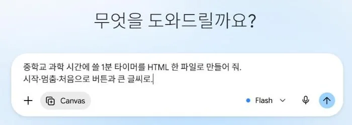
- 고를 수 있는 가장 높은 모델을 고릅니다
입력칸의 모델 이름(위 그림의 Flash)을 눌러 고릅니다. 무료 계정은 고를 수 있는 것이 Auto와 Flash-Lite뿐이라 Auto로 둡니다. 자물쇠가 붙은 모델은 유료 요금제용입니다.
- 프롬프트를 붙여넣고 보냅니다
위에서 복사한 프롬프트를 붙여넣고 오른쪽 ↑ 단추를 누릅니다.
- [미리보기]로 써봅니다
오른쪽 캔버스에서 만든 도구를 바로 눌러봅니다. 위쪽 [코드]를 누르면 전체 코드가 보이고, 3장면에서 이 코드를 복사해 GitHub에 올립니다.

- 코드가 중간에 끊겼습니다
- 무료 계정에서 자주 있는 일입니다. 「처음부터 끝까지 다시, 설명은 빼고 코드만 써 줘」라고 보냅니다. 그래도 끊기면 기능을 하나 줄여 달라고 합니다.
- 하얀 화면만 나옵니다
- 「하얀 화면만 나와. 원인을 찾아서 고쳐 줘」라고 보냅니다.
- 묻기만 하고 만들지 않습니다
- 짧게 답하고, 잘 모르겠는 질문에는 「네가 정해 줘」라고 답해도 됩니다.
- 학교 구글 계정에서 Canvas가 보이지 않습니다
- 학교 계정은 학교 관리자가 기능을 정해 둡니다. 개인 구글 계정으로 들어가 다시 해봅니다.
처음 나온 화면이 그대로 완성본인 일은 드뭅니다. 초안은 몇 분이면 나오고, 시간은 대부분 고치는 데 듭니다. 첫 화면이 조금 어설퍼도 움직이기만 하면 다음 점검으로 넘어갑니다. 처음부터 완벽하게 만들려고 붙잡고 있으면 배포까지 가지 못합니다.
학생에게 주기 전 30초 점검
끝까지 눌러 보고, 내용을 보고, AI에게 틀린 곳을 한 번 더 물어봅니다.
단추는 연달아 빠르게, 입력칸은 비운 채로 눌러봅니다. 화면이 깨지거나 이상한 글자가 뜨면 적어 둡니다.
용어, 맞춤법, 정답, 연도처럼 틀리면 안 되는 것을 하나씩 봅니다.
학생이 이 화면만 보고 오해할 만한 곳이 있는지 학생 눈으로 봅니다.
이 페이지에서 내용이 틀리거나 학생이 오해할 수 있는 부분, 그리고 여러 번 누르거나 빈칸으로 두면 깨지는 부분만 목록으로 알려 줘. 코드는 아직 바꾸지 마.
AI가 만든 도구는 그럴듯하게 움직이지만, 퀴즈라면 정답이 틀린 채로 들어 있기도 하고, 단추를 빠르게 여러 번 누르면 점수가 두 번 오르기도 합니다. 처음 화면에서는 맞아 보이다가 끝까지 눌러보면 드러납니다.
AI에게 점검을 맡길 때는 코드를 바로 바꾸지 말고 목록만 받습니다. 고치는 일은 다음 블록에서 하나씩 합니다.
말로 고치기, 한 번에 하나씩
고칠 곳 하나를 집어 말하고, 끝에 「나머지는 그대로 둬」를 붙입니다.
좀 더 보기 좋게 해 줘.
잘 되던 곳까지 새로 짜여서, 처음부터 다시 확인해야 합니다.제목 글씨만 두 배로 키워 줘. 나머지는 그대로 둬.
바뀐 곳이 하나라서, 확인도 그곳만 하면 됩니다.자주 쓰는 고치기 부탁
교실 전자칠판에 띄울 거야. 글씨와 버튼만 지금보다 1.5배 크게 해 줘. 나머지는 그대로 둬.
처음 화면에 이 페이지를 어떻게 쓰는지 한 줄로 적어 줘. 나머지는 그대로 둬.
오른쪽 위에 전체 화면 단추를 넣어 줘. 나머지는 그대로 둬.
문제마다 [힌트] 단추를 넣어 줘. 힌트는 누를 때마다 하나씩 열리고, 정답은 바로 보이지 않게 해 줘. 다른 곳은 그대로 둬.
문제, 명단, 시간처럼 나중에 내가 바꿀 값을 코드 맨 위 한곳에 모으고, 어디를 고치면 되는지 주석을 달아 줘. 화면은 바꾸지 마.
마지막 화면에 학생이 쓴 내용을 한 장으로 모아 보여 주고, [인쇄] 단추를 누르면 A4 한 장에 인쇄되게 해 줘. 다른 곳은 그대로 둬.
첨부한 사진의 느낌으로 디자인만 바꿔 줘. 색, 글꼴, 여백만 참고하고 기능과 글 내용은 그대로 둬.
방금 고치기 전으로 되돌려 줘.
- 고쳐 달라고 했더니 다른 곳까지 바뀌었습니다
- 「방금 고치기 전으로 되돌려 줘」라고 한 뒤, 고칠 곳 하나만 다시 부탁합니다.
- 사용량이 다 됐다고 나옵니다
- 몇 시간 뒤에 다시 채워집니다. 같은 부탁을 되풀이하는 것이 가장 많이 쓰니, 부탁을 하나로 모아 짧게 보냅니다.
「좀 더 보기 좋게」처럼 넓게 부탁하면 AI가 잘 되던 부분까지 새로 짜는 일이 생깁니다. 고칠 곳 하나를 이름으로 부르고 끝에 「나머지는 그대로 둬」를 붙이면, 바뀐 곳만 확인하고 다음으로 넘어갈 수 있습니다.
디자인은 말로 설명하기 어려워서, 마음에 드는 화면이나 포스터 사진을 함께 주는 편이 빠릅니다. 1장면 영상의 「디자인은 사진을 참고해서」도 그렇게 부탁한 것입니다. 사진 속 로고나 글자는 가져오지 않고 색, 글꼴, 여백 같은 규칙만 참고하게 합니다.
GitHub로 배포하기
만든 도구를 GitHub에 올려 주소를 만들고, 옆 선생님 휴대폰으로 열어보겠습니다!
지금 만든 도구는 내 화면에서만 열립니다
학생 기기에서 열리려면 인터넷 주소가 있어야 합니다. GitHub Pages가 저장소에 올린 HTML 파일에 주소를 붙여 줍니다.
Gemini의 미리보기는 만든 사람 화면에서만 열립니다. 학생이 자기 기기로 열려면 도구가 인터넷 주소를 가져야 하고, 이 일을 배포라고 합니다.
GitHub는 코드를 보관하는 서비스입니다. 그 안의 Pages 기능을 켜면 저장소에 올린 HTML 파일을 웹 주소로 열어 줍니다. 같은 일을 하는 Netlify, Vercel도 있지만 오늘은 GitHub 하나로 합니다. GitHub 화면은 영어 그대로 둡니다. 크롬 번역을 켜면 단추 이름이 이 페이지의 안내와 달라집니다.
GitHub에 가입하고 저장소를 만듭니다
저장소는 파일을 넣어 두는 방입니다. 저장소 이름이 주소 가운데에 들어갑니다.
- github.com에서 가입합니다
Sign up에서 Continue with Google을 누르고 내 구글 계정을 고릅니다. 아래 화면에서 ① 영어 아이디(초록 ✔이 뜨면 쓸 수 있음) ② Korea, South를 확인하고 ③ Create account를 누릅니다. 사람인지 확인하는 퍼즐과 메일로 온 숫자 코드를 넣으면 끝납니다. 이미 가입했다면 로그인만 합니다.
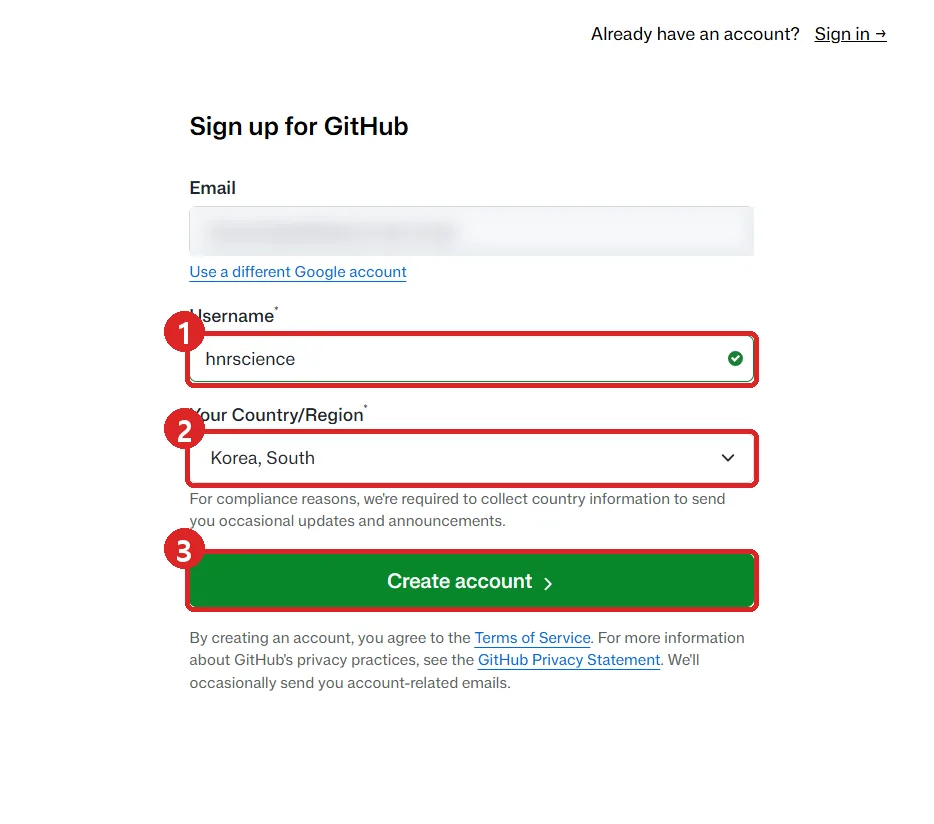
- 새 저장소를 엽니다
① 오른쪽 위 +를 누르고 ② New repository를 누릅니다. 맨 위의 New issue가 아닙니다.
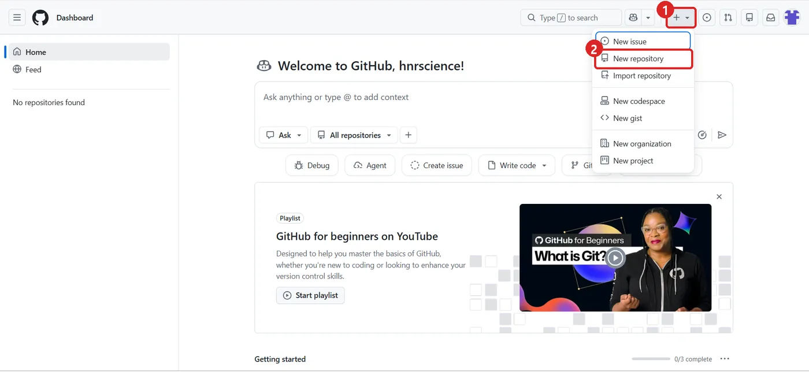
- 이름을 짓고 만듭니다
① Repository name에 띄어쓰기 없는 영어 이름(예:
class-timer) ② Public인지 확인 ③ 맨 아래 Create repository. 나머지 칸은 건드리지 않습니다.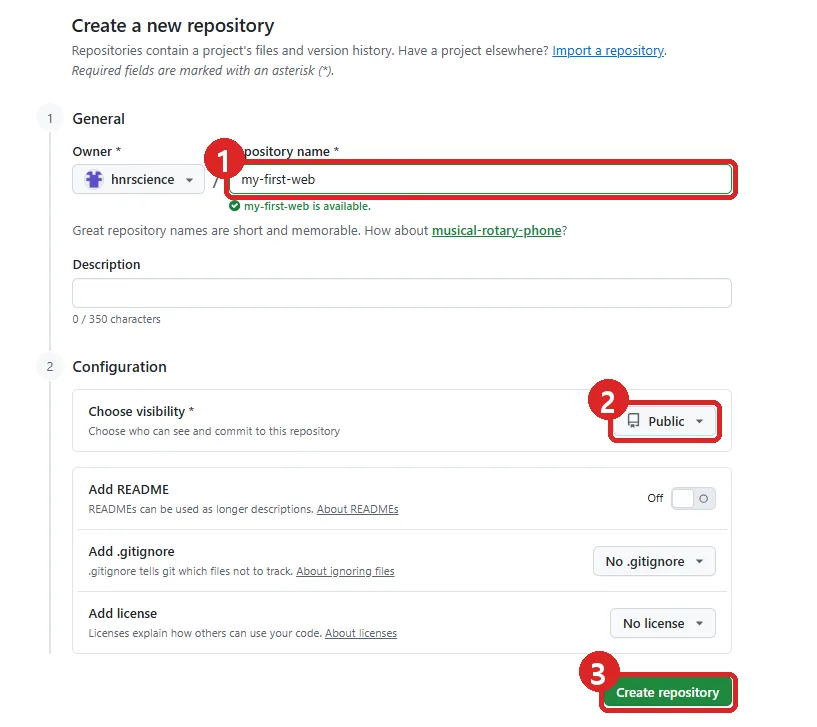
GitHub는 만 13세 이상이 쓰는 서비스입니다. 구글 계정으로 가입하면 이메일이 저절로 채워져서 몇 분이면 끝납니다. 연수 전에 미리 가입해 오시면 이 블록을 건너뜁니다.
저장소 이름은 주소 가운데 /저장소이름/으로 들어가서, 학생이 받아 적기 쉽게 짧은 영어로 짓습니다. Private 저장소는 무료 계정에서 Pages를 켤 수 없어서 Public으로 만듭니다.
index.html을 만들고 Gemini 코드를 붙여넣습니다
Gemini 캔버스의 [코드]에서 전체를 복사해, 저장소에 index.html이라는 이름으로 붙여넣습니다.
- Gemini에서 코드를 복사합니다
캔버스 위쪽 [코드]를 누르고, 코드 칸을 한 번 클릭한 뒤 Ctrl+A로 전체를 고르고 Ctrl+C로 복사합니다.
- creating a new file을 누릅니다
방금 만든 저장소의 파란 Quick setup 상자 맨 아래 줄에 있습니다. 글씨가 작으니 잘 찾아봅니다.
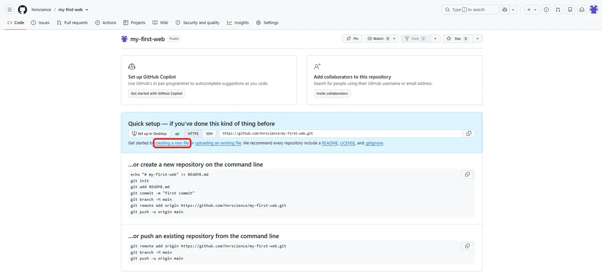
- 이름은 index.html, 코드는 붙여넣기
① 맨 위 이름 칸에
index.html(모두 소문자, 점 하나) ② 큰 칸을 클릭하고 Ctrl+V ③ 오른쪽 위 초록 Commit changes...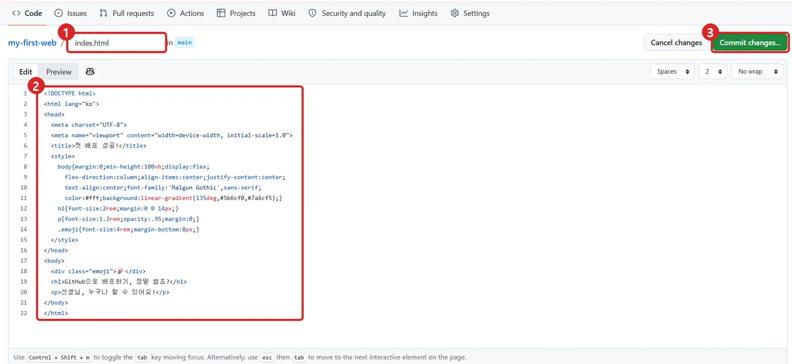
- 한 번 더 Commit changes
작은 창이 뜨면 적힌 글은 그대로 두고 초록 Commit changes를 한 번 더 누릅니다. 파일 목록에 index.html이 보이면 끝입니다.
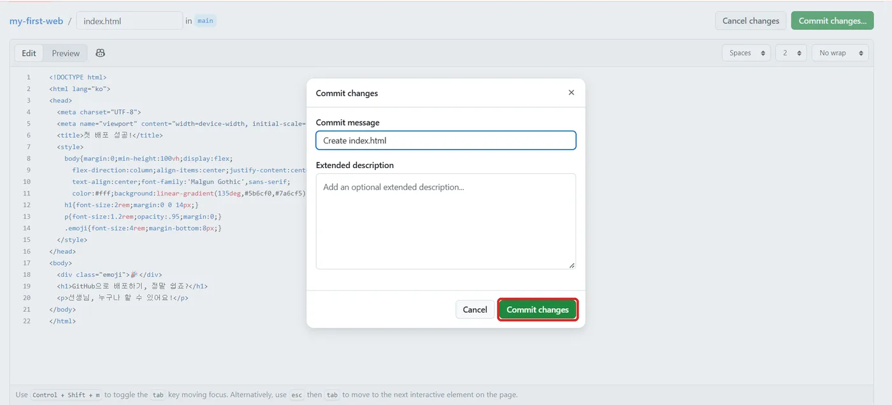
[다운로드]로 받은 파일을 올리려면
저장소의 Add file → Upload files에서 받은 파일을 끌어다 놓고 Commit changes를 누릅니다. 파일 이름은 바꾸지 말고 그대로 올린 뒤, 주소 끝에 그 이름을 붙여 엽니다(예: …/class-timer/timer.html).
컴퓨터에서 이름을 index.html로 바꾸다 보면, 윈도우가 숨겨 둔 .html 뒤에 한 번 더 붙어 index.html.html이 되는 일이 가장 흔합니다. 그래서 오늘은 붙여넣기 길을 씁니다.
주소가 /로 끝나면 웹사이트는 그 폴더의 대표 파일을 찾아 보여 주는데, GitHub Pages의 대표 파일 이름이 index.html입니다. 그래서 대표 페이지를 index.html로 두면 학생에게 짧은 주소만 알려 줘도 바로 열립니다.
코드를 복사해 붙여넣는 길은 파일을 내려받고 이름을 바꾸는 과정을 통째로 건너뜁니다. 이름을 GitHub 화면에서 직접 치니 확장자가 숨겨지는 문제도 생기지 않습니다.
Pages를 켭니다
저장소는 원래 파일을 보관만 하는 곳입니다. Pages 스위치를 켜야 누구나 열 수 있는 주소가 생깁니다.
- Settings → Pages → main → Save
① 저장소 위쪽 탭 줄의 Settings(오른쪽 위 프로필 사진의 Settings가 아님) ② 왼쪽 메뉴를 내려 Pages ③ Branch 아래 None을 눌러 main ④ 옆의 / (root)는 그대로 ⑤ Save
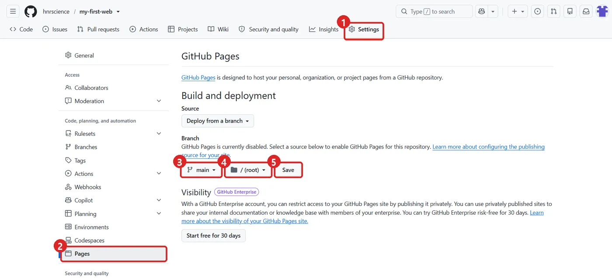
1~2분 기다렸다가 내 링크를 열고, QR로 나눕니다
Actions 탭의 주황 점이 초록 ✓로 바뀌면 주소가 열립니다. 옆 선생님 휴대폰으로 QR을 찍어 학생이 보는 화면을 확인합니다.
- Actions에서 주황 점이 초록 ✓가 될 때까지
① 위쪽 탭 줄의 Actions ② pages build and deployment 앞에 주황 점이 있으면 아직 사이트를 짓는 중입니다. F5로 새로고침하며 기다립니다.
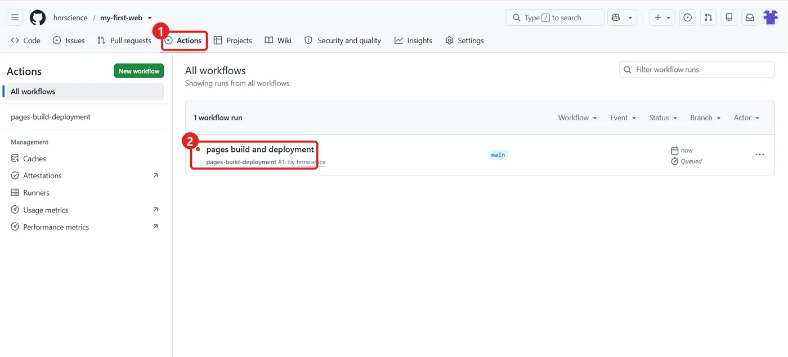
- 초록 ✓가 보이면 다 지어진 것입니다
보통 1~2분 걸립니다.
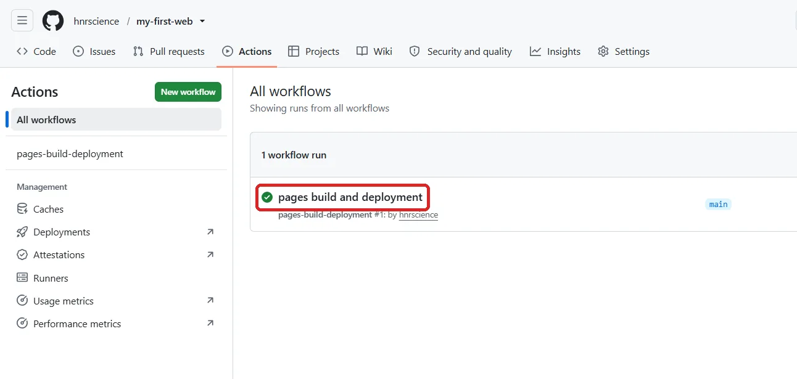
- Settings → Pages에서 Visit site
① Your site is live at 뒤의 파란 주소가 내 링크입니다 ② Visit site를 누르면 새 창으로 열립니다 ③ 빨간 Unpublish site는 공개를 끄는 단추라 누르지 않습니다.
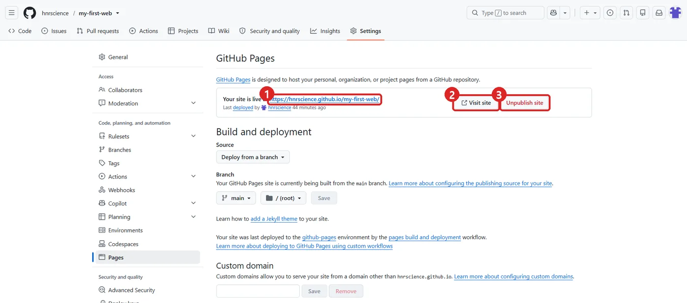
주소는 https://아이디.github.io/저장소이름/ 꼴입니다. 아이디는 소문자로 바뀌어 들어가고, 저장소 이름은 대소문자까지 똑같아야 열립니다.
옆 선생님 휴대폰으로 QR을 찍어 열어보면, 학생이 받을 화면을 그대로 볼 수 있습니다. 휴대폰에서 글자가 너무 작거나 단추가 화면 밖으로 나가면 2장면으로 돌아가 한 가지씩 고칩니다. 적어 주신 아이디와 저장소 이름은 이 기기에만 저장됩니다.
고친 것을 다시 올립니다
Gemini에서 고친 코드를 index.html에 덮어 붙여넣으면, 주소는 그대로이고 내용만 바뀝니다.
- Gemini에서 고치고 [코드]를 다시 복사합니다
Ctrl+A, Ctrl+C
- 저장소에서 index.html을 누르고 연필 모양을 누릅니다
파일 내용 오른쪽 위의 연필(Edit this file)입니다.
- 전부 지우고 붙여넣은 뒤 Commit changes
코드 칸을 클릭하고 Ctrl+A로 고른 다음 Ctrl+V. 초록 Commit changes...를 두 번 누릅니다.
- 1~2분 뒤 같은 주소를 새로고침합니다
바로 바뀌지 않으면 조금 더 기다렸다가 Ctrl+F5로 새로고침합니다.
주소가 바뀌지 않으니 학생에게 링크를 다시 알려 줄 필요가 없습니다. 수업 전날 고쳐 올려도 학생은 같은 QR로 고친 도구를 엽니다.
1장면에서 본 「한 번 고칠 때마다 드는 걸음」이 바로 이 과정입니다. 웹 채팅으로는 고칠 때마다 이 네 걸음을 다시 밟습니다.
안 될 때
대부분 이름, 공개 설정, 기다림 가운데 하나입니다. 아래를 차례로 봅니다.
404 화면이 뜹니다
저장소가 Public인지, index.html이 폴더 안이 아니라 저장소 첫 화면에 바로 있는지, 이름이 index.html 하나인지(.html.html, .txt가 아닌지) 봅니다. Pages에서 main과 / (root)로 Save했는지, Actions의 초록 ✓를 본 뒤 새로고침했는지도 봅니다. 주소의 대소문자도 저장소와 똑같아야 합니다.
코드 글자만 보이거나 화면이 이상합니다
코드가 HTML 파일 하나가 아닐 수 있습니다. 맨 윗줄이 <!DOCTYPE html>인지 보고, 아니라면 아래 문장으로 다시 받아 붙여넣습니다.
지금 만든 걸 HTML 파일 하나로 다시 만들어 줘. HTML, CSS, JavaScript를 전부 한 파일에 넣고, 맨 윗줄은 <!DOCTYPE html>으로 시작하게 해 줘. 다른 파일 없이 이 파일 하나만으로 작동해야 해.
하나씩 점검하기(8가지)
- 저장소가 Public입니다.
- 올린 파일이 저장소 첫 화면에 바로 보입니다(폴더 안이 아님).
- 파일 이름 끝이 .html 하나입니다.
- 코드 맨 윗줄이 <!DOCTYPE html> 또는 <html>입니다.
- Settings의 Pages에서 main과 / (root)로 Save했습니다.
- Actions에서 초록 ✓를 확인한 뒤 새로고침했습니다.
- index.html이 아닌 파일은 주소 끝에 파일 이름을 붙였습니다.
- 주소의 대소문자를 저장소와 똑같이 입력했습니다.
마무리
연수 이후에 다시 보며 따라하실 수 있는 사이트입니다.
다시 보실 곳
오늘 한 순서를 더 자세히, 다른 AI로도 따라 할 수 있게 정리한 페이지들입니다.
다음 단계
오늘은 5단계 가운데 1단계 맛보기와 2단계 배포를 했습니다. 만든 도구를 수업에서 쓰다가 아래와 같은 일이 생기면 다음 단계로 넘어갑니다.
- 1단계 맛보기웹 채팅에서 말로 도구 만들기오늘
- 2단계 배포GitHub Pages로 주소 만들기오늘
이럴 때 넘어갑니다
- 글자 하나, 색 하나를 고치는데도 코드 전체를 다시 받아 붙여넣고 GitHub에 다시 올리는 일이 잦아질 때
- 기능을 더하다 코드가 길어져 Gemini 답이 중간에 끊기고, 이어 붙인 코드가 자꾸 깨질 때
- 새 채팅을 열 때마다 지금까지 만든 코드를 다시 올려 설명해야 할 때
넘어가실 때는 이 매뉴얼을 보세요
바이브코딩 기초 ↗맨 위에서 도구를 「ChatGPT 앱 · Codex」나 「Claude 앱 · Code 탭」으로 고르면, AI가 내 컴퓨터 폴더에서 파일을 만들고 고치는 순서가 나옵니다.이럴 때 넘어갑니다
- 학생이 도구에 쓴 답이 학생 화면에만 남아서, 한곳에 모아 볼 수 없을 때
- 답을 모으려고 결과 화면을 캡처해 올리게 하거나, 설문지를 따로 만들고 있을 때
- 반별, 차시별로 누가 무엇을 냈는지 표로 보고 싶을 때
넘어가실 때는 이 매뉴얼을 보세요
학생 데이터·AI 연결 ↗Supabase 프로젝트 만들기부터 학생 제출 받기, 교사만 보는 화면까지 순서대로 나옵니다. 학생에게 내놓기 전에 확인할 다섯 가지도 함께 있습니다.이럴 때 넘어갑니다
- 학생 글 서른 편에 피드백 초안을 받으려고, 한 편씩 AI 채팅에 붙여넣고 있을 때
- 모인 학생 질문을 주제별로 묶는 일을 매번 손으로 하고 있을 때
- 숫자와 상황만 바꾼 연습 문제를 도구 안에서 바로 만들어 학생에게 주고 싶을 때
넘어가실 때는 이 매뉴얼을 보세요
학생 데이터·AI 연결 · 6장면 ↗AI 키를 숨긴 채 연결하는 구조와 결제 한도 거는 법이 나옵니다. AI 키를 4단계에서 만든 Supabase의 금고에 넣어 쓰기 때문에, 4단계를 먼저 합니다.오늘은 Gemini에서 교실 도구를 만들고, 점검하고, 한 가지씩 고친 뒤 GitHub에 올려 링크로 나누는 데까지 했습니다. 같은 순서로 다음 도구를 만들 때는 새 저장소를 만들거나, 같은 저장소에 이름이 다른 파일로 올리고 주소 끝에 파일 이름을 붙입니다.
연수가 끝난 뒤에도 다시 열어보실 수 있게 이 페이지를 그대로 둡니다.